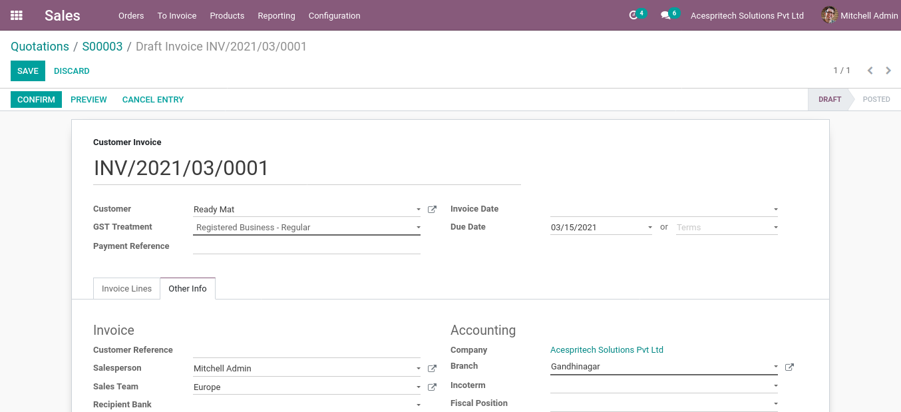

Create Branch based on single or multi company
concept.
Assign branch to particular user.
You can change branch in user preference form.
Sale Order Workflow
with Branch
while create Sale order branch will come as per
configured in warehouse.
While Confirm Sale order it will create Delivery order
and branch set automatically based on sale order.
Customize Sales Order Report.
Customize Sale Analysis with Branch Concept.
You can use the Branch group by filters in sales
order.
Customize Stock Picking Operations Report
Customize Stock Delivery Slip Report
While create invoice from sales order branch set
automatically based on sale order.

Purchase Order Workflow
with Branch
while create purchase order branch will set based on
current login user branch.
while confirm purchase order it will create Receipt
Picking and branch set automatically based on purchase order.
Customize Purchase Order Quotation Report.
Customize Purchase Order Report.
You can use group by Branch filter in purchase order.
Customize Purchase Analysis with Branch Concept.
While create vendor bill from purchase order branch set
automatically based on purchase order.
Invoice Workflow with
Branch
while create customer/supplier invoice branch will set
based on current login user branch.
Customize invoice report.
While Validate invoice it will create Journal entry and
branch will set automatically based on invoice branch.
While make payment for the invoice it will create
Journal entry and branch will set automatically based on invoice branch.
While make payment for the invoice it will create
customer/supplier payment and branch will set automatically based on invoice branch.
Customize customer/supplier payments report.
You can use group by Branch filter in customer/supplier
invoice.
You can use group by Branch filter in customer/supplier
payments.
Make invoice analysis based on branch wise.
Release Update - October 17, 2020 Version - 1.0.0
Initial Release
NOTE:
We give 60 days support for our customers. Before trying in your live db, please ask us to provide
you for test link. If any other custom modules are installed and because of that some errors occurs
then we charge extra.